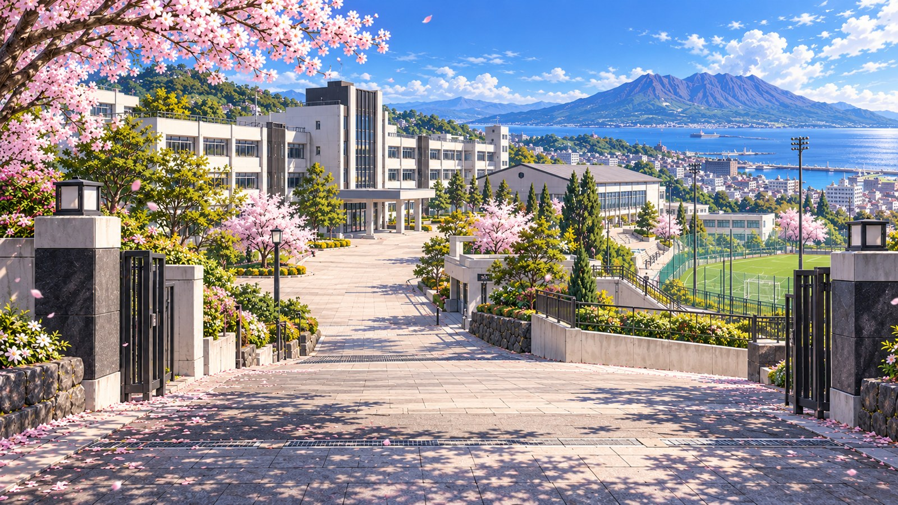
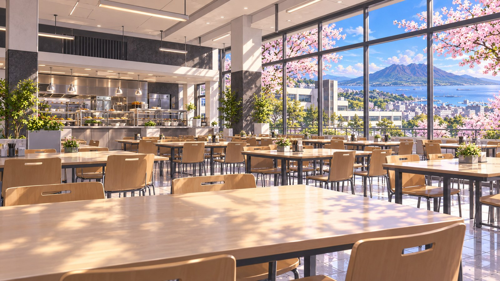
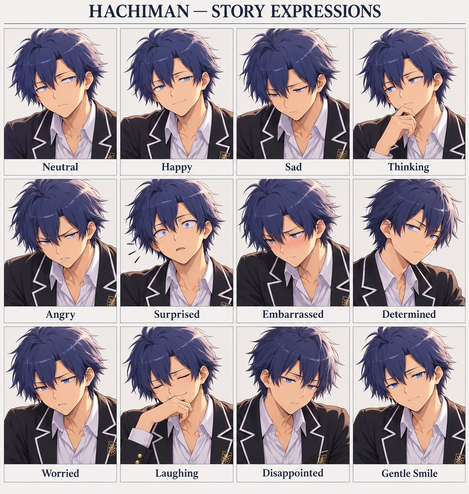
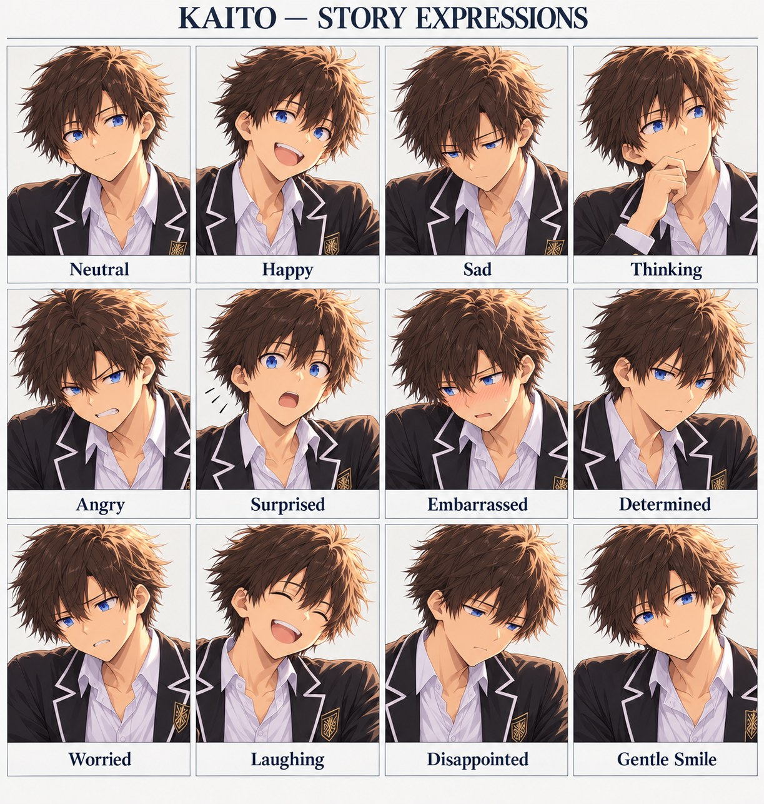
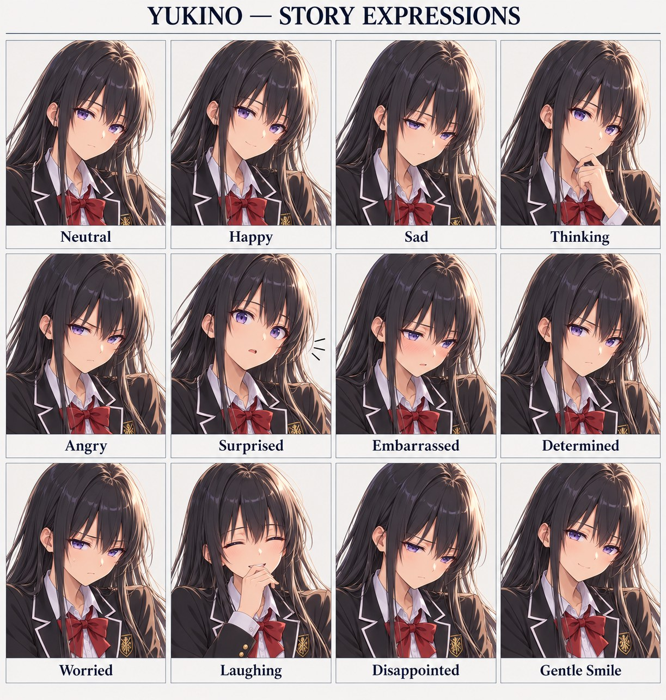
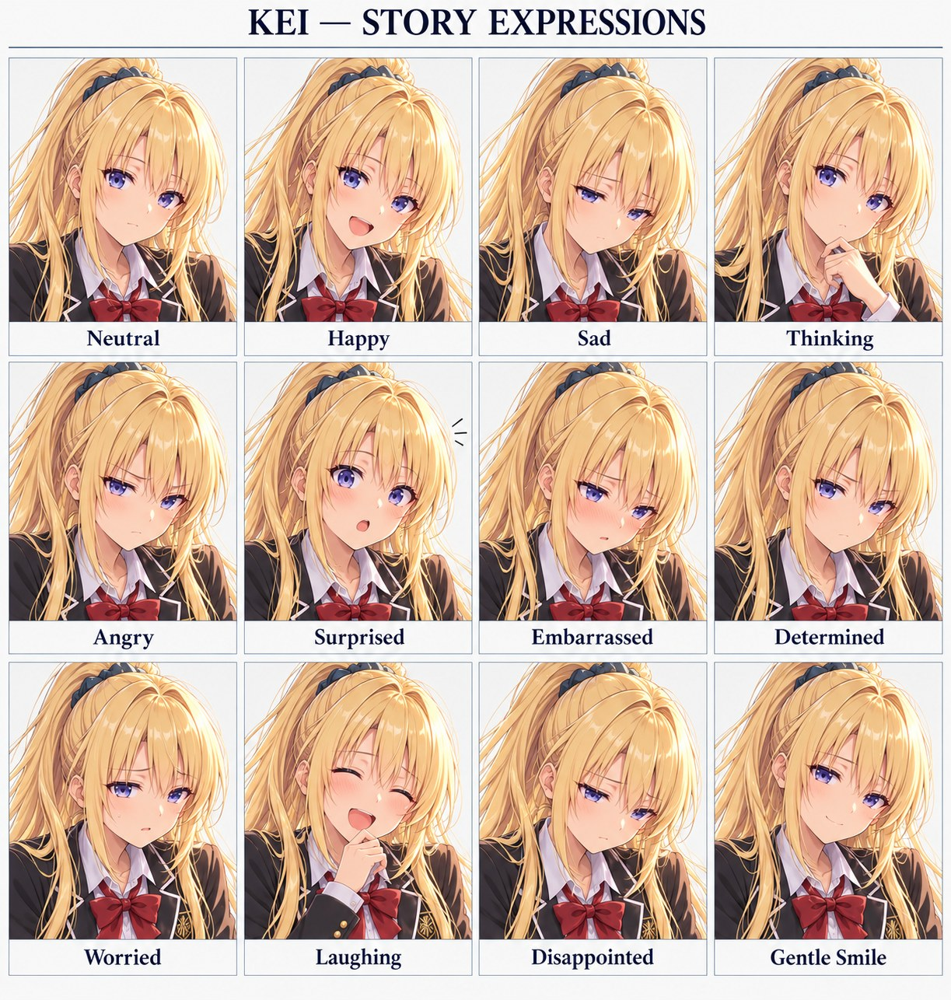
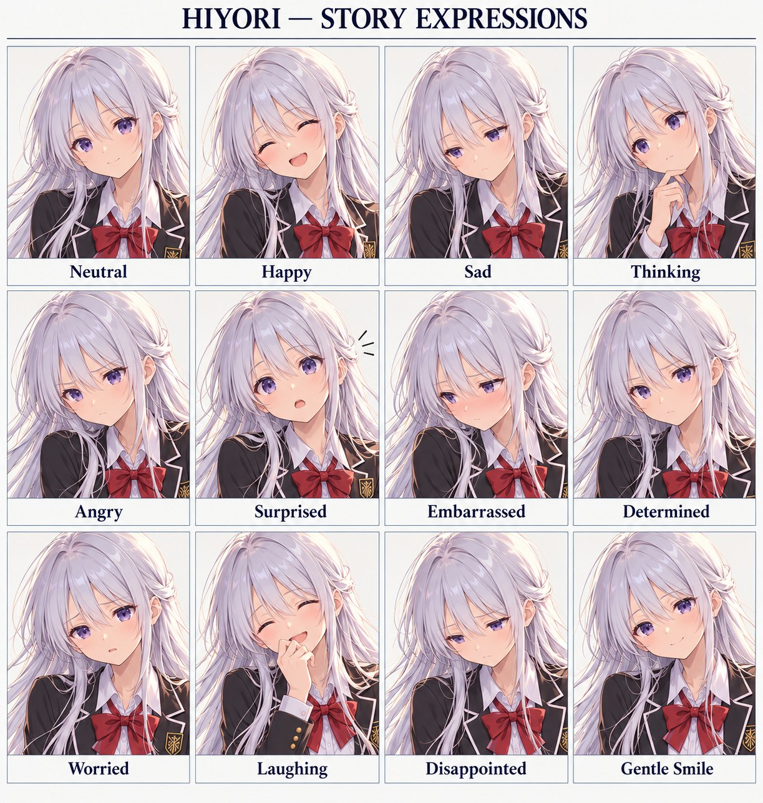

Four Directions — Episode 1FOUR DIRECTIONS · ILLUSTRATED STORY SCRIPT
Episode 1
The Life I Was Going to Have
Five school scenes · choices · friendship · a reluctant return to football
SCENE 1 — THE SCHOOL ENTRANCE

Background: Minami Seiryū entrance, morning.
Expressions: Hachiman Neutral → Worried; Kaito Happy → Thinking.
Hachiman had made three promises to himself before entering high school.
Keep his grades respectable. Find a quiet place to eat. Never join a club that involved running.
The third promise was especially important.
Minami Seiryū stood above the coast, its white buildings catching the morning light. Beyond the gates, cherry petals drifted across the stone path. Beyond the football ground, the bay glittered.
An ordinary school. An ordinary beginning.
He could work with that.
“You’re staring at the pitch.”
Hachiman turned. A boy in the same black blazer stood beside the gate, smiling as though their last conversation had been yesterday.
“I was looking at the ocean.”
“The ocean doesn’t have goalposts.”
“It might. You haven’t checked.”
Kaito laughed. Hachiman looked away before his own mouth could betray him.
They had exchanged messages during the break. Neither had said much about where he would study. Seeing Kaito here made the school suddenly less unfamiliar—and considerably more dangerous.
“Same school,” Kaito said. “What are the chances?”
“You knew.”
“I suspected.”
“That means you knew.”
“It means I’m delighted.”
Kaito adjusted his bag. For a moment, his gaze slipped past Hachiman toward the football pitch. The smile remained, but something behind it changed.
Hachiman recognised that look.
It belonged to someone hearing a song he had promised never to sing again.
“I’m not joining,” Hachiman said.
Kaito looked back immediately.
“I didn’t ask.”
“You were about to.”
A ball struck a fence somewhere beyond the buildings. Both boys turned toward the sound at precisely the same instant.
Both noticed.
Neither commented.
“I want a simple life,” Hachiman said. “Classes. Lunch. Home. A schedule so boring it can’t hurt anyone.”
Kaito’s smile softened.
“Sounds expensive.”
“Boredom is free.”
“Then why does everyone work so hard to escape it?”
Hachiman started walking. Kaito fell into step.
At the corner, a club recruitment poster fluttered against a noticeboard.
FOOTBALL CLUB — NEW MEMBERS WELCOME.
Kaito slowed long enough to read it. Hachiman pretended he had not.
Player choice — Hachiman’s reply:
A. “We can look around. Looking isn’t joining.” [Openness +1]
B. “You can join without me.” [Honesty +1]
C. “Let’s find our classroom first.” [Caution +1]
Branch line A: Kaito raises an eyebrow. “I’ll remember that permission.”
Branch line B: Kaito’s smile fades slightly. “I know. That isn’t the problem.”
Branch line C: “Right,” Kaito says. He catches up without another look at the poster.
All routes continue into the classroom. This choice changes later dialogue, not whether they are forced into a match.
SCENE 2 — THE CLASSROOM
Background: classroom, morning.
Expressions: Yukino Neutral/Thinking; Kei Happy/Angry; Hiyori Gentle Smile; Hachiman Embarrassed; Kaito Laughing.
Hachiman chose a seat beside the window.
From there, he could see the bay.
Unfortunately, he could also see the pitch.
“A tactical error,” he muttered.
“Already analysing your position?” Kaito asked from the desk behind him.
“I’m considering a transfer.”
“We’ve been here four minutes.”
A girl with long black hair stopped beside the neighbouring desk.
“If you intend to complain throughout the year, could you choose a quieter audience?”
Hachiman looked up.
“I wasn’t aware the seating came with conditions.”
“Most things do. People simply neglect to read them.”
She set her bag down.
“Yukino Yukinoshita.”
“Hachiman Hikigaya.”
“I heard.”
“Then this introduction has been remarkably efficient.”
Behind him, Kaito made a sound suspiciously close to a suppressed laugh.
“You two know each other?” asked a blonde girl, leaning over the next row.
“Unfortunately,” Hachiman said.
“Since middle school,” Kaito corrected.
“That’s what I said.”
“Kei Karuizawa,” she announced. “And if you keep making that face, everyone will think you hate being here.”
“A misunderstanding would require them to be wrong.”
“Wow. You really practise these answers?”
Kaito laughed properly this time.
Yukino hid a small smile behind the movement of opening her notebook.
Hachiman noticed. He wished he had not.
At the front of the classroom, a pale-haired girl was struggling to lift a box of books onto a shelf. Hachiman stood before he had decided to.
He took one side of the box.
“This shelf?”
“Yes. Thank you.”
The books settled into place.
“Hiyori Shiina,” she said.
“Hikigaya.”
“I heard your introduction too.”
“My reputation is spreading too quickly.”
Hiyori smiled.
“Only across one classroom.”
One paperback remained on her desk. Its cover was creased with use.
“You like reading?” she asked, noticing his glance.
“It’s a useful way to avoid talking.”
“Sometimes it helps you find something to talk about.”
He had no immediate answer.
That was unusual enough to irritate him.
The classroom door slid open.
Shizuka Hiratsuka entered carrying an attendance register and several bundles of forms.
“Welcome to Minami Seiryū. I’m your homeroom teacher. Before anyone asks: yes, the first week has paperwork. No, looking disappointed won’t reduce it.”
Her eyes briefly settled on Hachiman.
Kaito leaned forward.
“She found you immediately.”
During introductions, Kaito described himself as someone who liked “anything requiring good timing.”
“Music?” Kei asked.
“Sometimes.”
“Sports?”
A small pause.
“Sometimes,” he said again.
Hachiman stared at his blank notebook.
He remembered a different introduction. Grass under his boots. Five familiar voices. Gun standing in front of them, already wearing the captain’s armband.
Then the memory ended before it reached the trophy.
He wrote the date.
Nothing else.
SCENE 3 — THE CORRIDOR
Background: corridor, late morning.
Expressions: Kaito Thinking/Sad; Hachiman Worried; Yukino Determined; Kei Surprised; Hiyori Thinking.
After homeroom, Hiratsuka asked five students to carry the remaining club leaflets to the corridor noticeboard.
Hachiman’s hand had not gone up.
Apparently, that was no protection.
“You were nearest the door,” she explained.
“An architectural injustice.”
“Excellent. Save that energy for carrying.”
Kaito took half the pile before Hachiman could protest further.
Yukino carried the pins. Kei read the leaflets as they walked. Hiyori made sure none slipped from the stack.
“There’s a football club presentation after classes,” Kei said.
Kaito’s fingers tightened slightly around the paper.
Yukino noticed.
Hachiman noticed Yukino noticing.
This was becoming an exhausting day.
“Are you interested?” she asked Kaito.
“I used to play.”
“That wasn’t the question.”
Kaito glanced at Hachiman.
Just once.
Yukino followed the glance.
“You can answer for yourself.”
The corridor grew quiet.
Hachiman looked through the window. On the field below, someone was collecting cones.
“He knows that,” he said.
“Then you shouldn’t need to answer for him.”
Kei lowered her leaflet.
“Wait. Did you two argue about football?”
“No,” Kaito said quickly.
Hachiman said nothing.
Hiyori broke the silence.
“We could visit together. A presentation isn’t a commitment.”
“That,” Hachiman said, “is how commitments disguise themselves.”
“Sometimes,” she replied. “But sometimes it’s just a room with people in it.”
Kaito pinned the football leaflet to the board.
He smoothed its corner more carefully than necessary.
When the girls moved ahead, Hachiman remained beside him.
“You don’t have to stop because of me.”
“I didn’t say I was stopping.”
“You didn’t answer her either.”
Kaito looked at the leaflet.
“I thought starting here together would be easier.”
“Classes together are fine.”
“I wasn’t talking about classes.”
For the first time that morning, Kaito sounded his age rather than like someone performing confidence.
“Back then, we were all on the same level,” he said. “Different jobs on the pitch. Same team.”
“I remember.”
“Gun lifted the trophy. You looked like you wanted to go home.”
“There were cameras.”
“You smiled when they turned away.”
Hachiman’s answer came too quickly.
“That was a long time ago.”
Kaito’s expression closed.
“Right.”
He stepped away.
Hachiman watched him rejoin the others.
The word remained between them, much heavier than its five letters deserved.
SCENE 4 — THE CAFETERIA

Background: cafeteria, lunchtime.
Expressions: Kei Angry → Happy; Yukino Thinking/Gentle Smile; Hiyori Neutral; Kaito Disappointed; Hachiman Thinking.
Hachiman intended to eat alone.
Kaito sat opposite him.
Kei arrived with her tray.
Yukino chose the seat beside Kei.
Hiyori asked whether the remaining chair was free.
His simple life had now acquired a committee.
“You can sit somewhere else,” he told Kaito.
“So can you.”
“I arrived first.”
“Congratulations.”
Kei put down her drink.
“All right. Are we pretending the corridor conversation didn’t happen?”
“That was my preferred strategy,” Hachiman said.
“Terrible strategy.”
Yukino studied Kaito.
“You seem interested in the club.”
“I am.”
The honesty startled Hachiman more than a joke would have.
“Then visit it,” Yukino said.
Kaito rotated his cup.
“I don’t want to make him uncomfortable.”
Kei stared.
“You’re allowed to like something your friend doesn’t want to do.”
“It’s a little more complicated.”
“Then explain the complicated part.”
Kaito looked toward the windows.
“We played together. All six of us. First year of middle school.”
“Six?” Hiyori asked.
“Hachiman, me, Ayanokōji, Isagi, Makishima and Gun.”
At the last name, Hachiman’s hand stopped above his tray.
“Gun was our captain,” Kaito continued. “We won nationals.”
Kei blinked.
“You won the national championship?”
“Our team did,” Hachiman said.
Yukino caught the distinction.
“And then?”
Neither boy answered immediately.
Outside, a seabird passed across the bright window.
“Then we stopped,” Hachiman said.
Hiyori did not ask why.
Instead, she moved her cup away from the edge of the table.
That small act of giving the silence somewhere to settle made him unexpectedly grateful.
“You don’t have to tell us today,” she said.
Kei folded her arms.
“Fine. But don’t make Kuroba give up something just because he’s worried about you.”
Hachiman looked at Kaito.
“I haven’t asked him to.”
“I know,” Kaito said.
“Then why?”
Kaito’s smile returned, small and tired.
“Because I remember what we were like together.”
Hachiman looked down.
He had prepared arguments against ambition, competition, attention.
He had not prepared an argument against being missed.
Yukino spoke quietly.
“Wanting a peaceful life is reasonable. Deciding another person’s life must stay peaceful beside yours is less reasonable.”
For once, there was no cruelty in her precision.
Only a door he would have preferred not to see.
Player choice — respond to one girl:
A. Tell Yukino, “I’m not trying to decide for him.” [Yukino rapport +1]
She answers, “Then make that clear to him.” Her expression softens when he does.
B. Tell Kei, “You’re unexpectedly serious about this.” [Kei rapport +1]
“I can be serious,” she says. “You’re unexpectedly bad at noticing.”
C. Ask Hiyori, “Is watching really enough?” [Hiyori rapport +1]
“For a first day,” she says, “it can be.”
These are friendship beginnings. No romance route is locked and nobody falls in love from one lunch.
Hachiman pushed his tray aside.
“We can attend the presentation.”
Kaito looked up.
“Both of us?”
“We can leave afterward.”
“Of course.”
“No registration.”
“Understood.”
“No surprise practice.”
Kaito smiled more brightly.
“You make visiting a club sound like negotiating a hostage release.”
“I’m trying to prevent one.”
SCENE 5 — THE FOOTBALL PITCH
Background: football pitch, late afternoon.
Expressions: Hachiman Neutral → Surprised → Thinking; Kaito Happy/Determined; Yukino Thinking; Kei Happy; Hiyori Gentle Smile.
The presentation ended without disaster.
The club captain explained training days, equipment, and the need for new members. He did not promise trophies. He did not call anyone a genius.
Hachiman found this suspiciously sensible.
Afterward, Hiratsuka walked the group toward the field.
“You can watch from the bench,” she said.
“An excellent location,” Hachiman replied.
“Try not to sound relieved.”
Kaito stopped at the touchline.
He watched a pair of students passing.
His right foot shifted unconsciously as the ball travelled between them.
Hachiman noticed the timing.
Receive. Open the body. Release.
The old rhythm was still there.
One pass struck the edge of a cone and rolled toward the bench.
The nearest student called, “Sorry! Could you send that back?”
Hachiman stood.
The ball slowed beside his shoe.
He could have picked it up.
He could have nudged it any way at all.
Instead, his eyes moved across the field.
The calling student stood half turned, with a teammate between him and the cone.
Kaito had already drifted into the clear space.
Hachiman passed.
A clean touch. Firm enough to reach. Gentle enough to receive.
Kaito trapped it without looking down.
For a heartbeat, neither spoke.
The field seemed to shrink around that familiar distance.
Then Kaito sent the ball to the waiting student.
“There you go.”
Kei looked from one boy to the other.
“You both said you don’t play.”
“We said we stopped,” Hachiman answered.
Yukino’s eyes narrowed thoughtfully.
Hiyori smiled without saying anything.
The captain approached.
“You’ve played before.”
“A little,” Hachiman said.
Kaito gave him a look.
“Would you like to join a passing exercise?”
“No,” Hachiman answered.
The captain nodded.
“All right.”
That simple acceptance took the force out of Hachiman’s next excuse.
“You’re welcome to watch,” the captain continued. “Or borrow a ball. There’s no match today.”
Kaito looked at the equipment basket.
Then at Hachiman.
This time, Hachiman did not let the glance become a question he answered for him.
“If you want to try,” he said, “try.”
Kaito was quiet.
“You’re sure?”
“I’m capable of sitting on a bench without supervision.”
Kaito took off his blazer and folded it beside his bag.
He borrowed a ball.
At first, he only rolled it under his foot.
Then he lifted his head and made a short pass to a club member.
Nothing spectacular.
Nothing that required a crowd.
Hachiman watched.
Kaito’s smile returned before he even received the ball back.
Hiyori sat at the far end of the bench, leaving space.
“He looks happy,” she said.
“He usually does.”
“This looks different.”
Hachiman did not disagree.
Yukino remained standing nearby.
“You were watching his next movement before he made it.”
“He’s predictable.”
“He doesn’t seem predictable.”
“To most people.”
Her expression softened, just slightly.
“That must be a useful kind of friendship.”
He looked back toward the field.
“Sometimes.”
Kei called to Kaito, “Don’t make us wait here until dark!”
“Five minutes!”
“You said that five minutes ago!”
The ordinary complaint, the ordinary laughter afterward—Hachiman had not expected football to sound like this.
In his memory, it usually ended at a whistle.
Hiratsuka placed two trial membership forms on the bench.
“A week of observing or light practice,” she explained. “No tournament commitment. If you dislike it, tell the captain and stop.”
Hachiman looked at the blank name line.
It was only ink.
Why did it feel like a doorway?
Kaito returned, slightly breathless.
He saw the forms and stopped smiling.
“You don’t have to.”
Hachiman picked up the pen.
“A trial.”
“A trial,” Kaito agreed.
“You practise if you want. I watch first.”
“Okay.”
“And nobody announces our old team.”
Kaito’s answer came more slowly.
“Okay.”
Hachiman wrote his name.
Kaito wrote his beside it on the second form.
Neither promised to win anything.
Neither spoke about nationals.
For today, it was enough that they had entered the same club.
Final player choice — tomorrow’s first club activity:
A. Observe positioning beside the coach. [Tactical insight +1]
B. Help Kaito with a short passing drill. [Duo trust +1; light training unlocked]
C. Help organise equipment and stay to watch. [Club trust +1]
All choices preserve Hachiman’s reluctance. No full match occurs in Episode 1.
ENDING — THE WALK TO THE GATE
Reuse entrance background with evening lighting in a later asset; for now use the pitch background for the closing narration.
The girls walked ahead, arguing gently about which road led to the station.
Kaito waited for Hachiman to shoulder his bag.
“Still planning your simple life?”
“More carefully than ever.”
“Does it include tomorrow?”
“Unfortunately.”
Kaito grinned.
Hachiman let the silence remain comfortable this time.
In his pocket, his phone vibrated.
A message had appeared in the old team’s long-silent group chat.
Gun: Are any of you playing again?
Hachiman stopped.
Kaito read the screen over his shoulder.
Six names. One question.
Somewhere far to the north, their former captain had broken the silence first.
Hachiman locked the phone without replying.
Beyond the fence, someone made one last pass before collecting the ball.
He had wanted a simple life.
Today, he had signed his name.
END OF EPISODE 1
Production notes:
The reason the six stopped after their first-year middle-school national title remains intentionally unrevealed. Tadokoro and Midōsuji were opponents, not members of that six. Gun was captain. Hachiman and Kaito enter on a trial basis; Hachiman does not suddenly embrace competitive football. Existing expression sheets support the listed emotions. Relationship choices build rapport, not instant romance. The closing message is a proposed new story beat, not previously established canon. No Style Echo technique or statistical level-up activates yet; the first training choice unlocks Episode 2.
Character expression references
Use the labelled portraits to stage the expressions indicated in each scene. These are reference sheets; the backgrounds above remain ready for character placement.
Hachiman — 12 expressions

Kaito — 12 expressions

Yukino — 12 expressions

Kei — 12 expressions

Hiyori — 12 expressions
